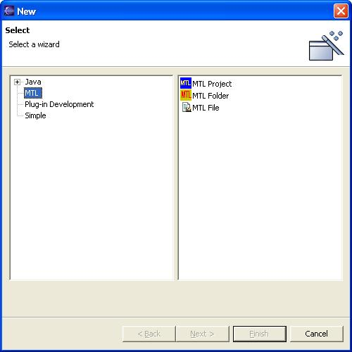
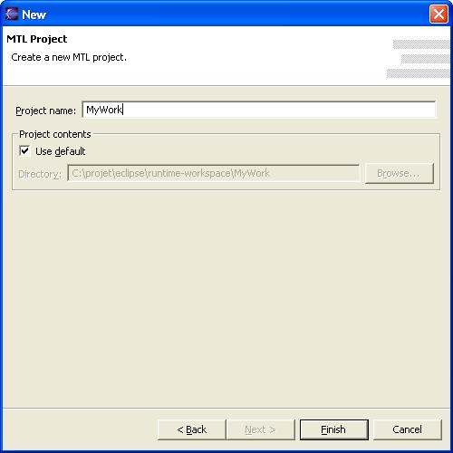

To create a new project, select File → New → Project... This will produce the dialog shown below.
|  |
| Figure 1: Create Project Dialog |
|---|
In the dialog, select the kind of project you wish to create, e.g., Java,
Simple, etc. on the left-hand side. On the right-hand side
select the specific project type.
In the example dialog, we show how to create an MTL project.
When you have selected your project type, press Next to provide a project name.
|  |
| Figure 2: Project Name and Location |
|---|
Fill in your project name and click Finish to create your project in the default location. (The default location, as you can see in the dialog, is a directory with your project name inside the active workspace directory.)
You newly created project will appear in the Navigator view, as shown below.
|
| Figure 3: New Project in Navigator View |
|---|
Note the .project and .classpath files. Those
files are created by Eclipse to mark the directory as containing an
Eclipse Java project. Names beginning with a period are used by Eclipse
plugins to mark files that are not explicitly created by the user. It
is a good idea not to use such names for your own files, as there is a
potential for conflict with some future plugin.
Since we created an MTL project, by default it shows up in the MTL perspective in the Navigator view. If you create a Java project, it will appear in the Java perspective in the view you last had open in that perspective.
You can editMTL files in any project type. The MTL and Java perspectives are pre-configured to show the MTL wizards in the toolbar, but you have to manually configure non-MTL perspectives to get the New MTL wizards into the menus. See Window → Customize Perspective... → File > New.